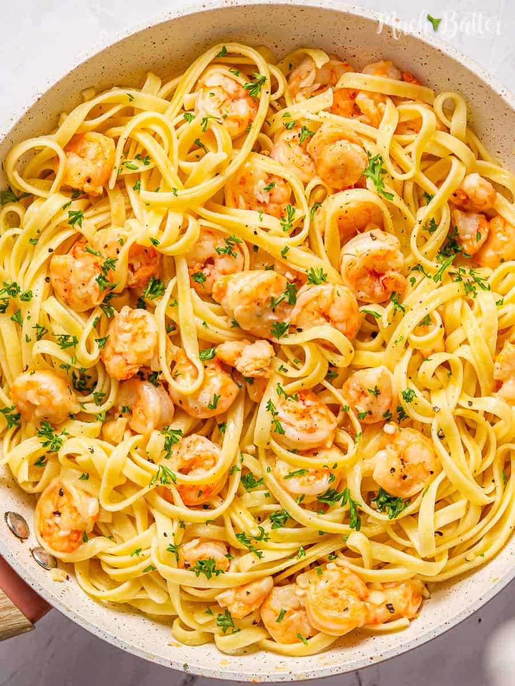

Garlic Butter Shrimp Pasta

Description
Garlic butter shrimp pasta is a delicious
meal featuring shrimp on a bed of tender fettuccine.
Ingredients
- 8 oz (about 2 cups) spaghetti or any pasta of your choice
- 1 lb (about 450g) shrimp, peeled and deveined
- 4 tablespoons butter
- 4 cloves garlic, minced
- Salt and pepper to taste
- Fresh parsley, chopped (optional, for garnish)
Steps
-
Cook the Pasta:
-
Cook the pasta according to the package instructions
until al dente. Drain and set aside.
-
Cook the Shrimp:
-
In a large skillet, melt 2 tablespoons of butter
over medium heat.
-
Add the shrimp to the skillet, season with salt and pepper,
and cook until they turn pink and opaque, about 2-3 minutes per side.
Remove the shrimp from the skillet and set aside.
-
Prepare the Garlic Butter Sauce:
-
In the same skillet, melt the remaining
2 tablespoons of butter.
-
Add the minced garlic and cook until fragrant,
about 1 minute.
-
Combine Everything:
-
Return the cooked shrimp to the
skillet and toss to coat in the garlic butter sauce.
-
Add the cooked pasta to the skillet and
toss everything together until well combined.
-
Serve:
-
Garnish with fresh parsley if desired and serve immediately.